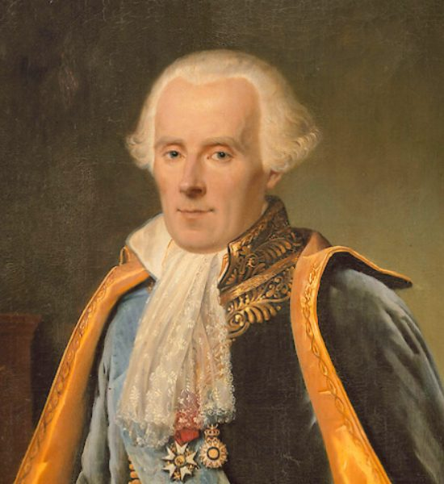
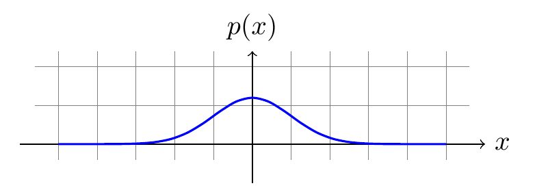
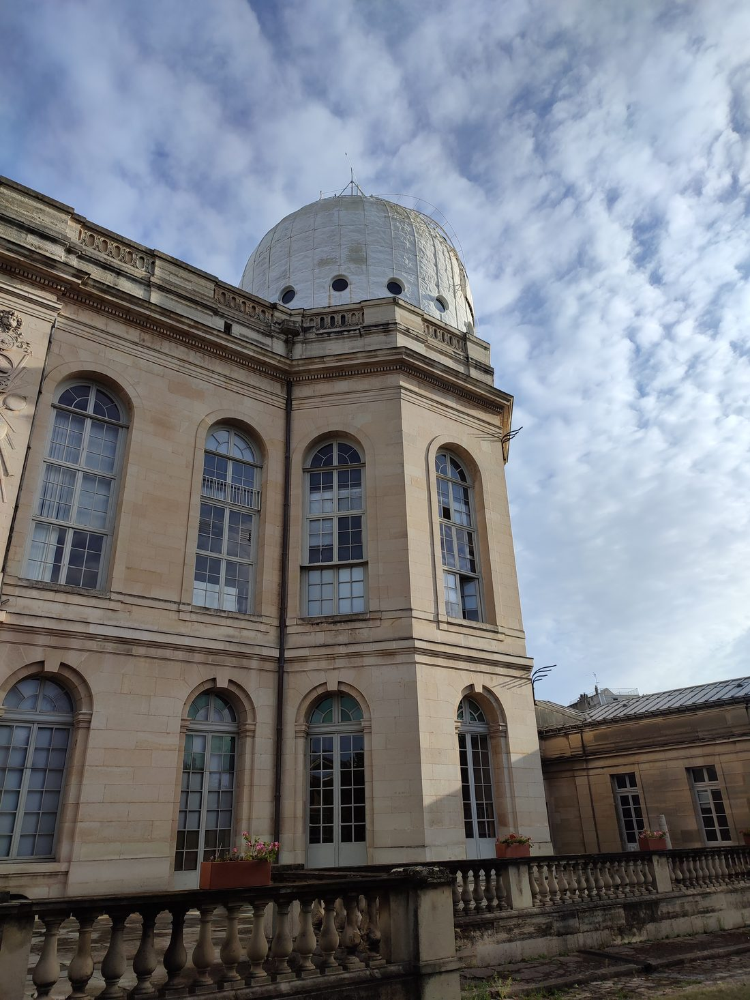
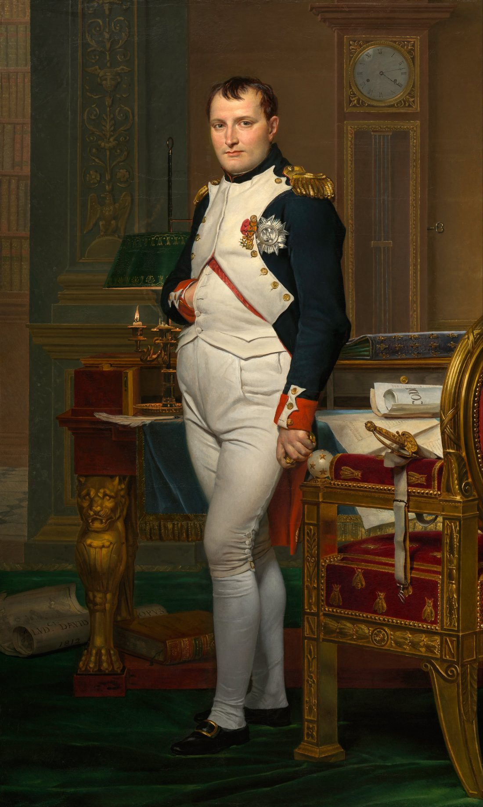
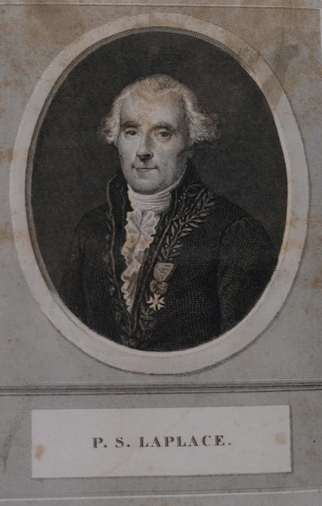

Презентация · 12 слайдов · клавиши ← → для навигации
ФранцияПолитехническая школаКабинет естественных наукЕкатерин II
Кто этоМальчик из деревни, ставший первым секретарём академии

Пьер-Симон Лаплас. Портрет П.-Ж. Гюэна (1783) Paulin Jean-Baptiste Guérin (1783 - 1855) — Wikimedia Commons · Public domain
Происхождение
1749Амьен, Нормандия. Сын крестьянина-сапожника, 11 братьев и сестёр
Детство
Школа в АмьенеВпечатлён скрипкой швейного мастера — решил изучить математику
Школа
1772Кафедра математики в Бурже, затем военная школа в Амьене
Париж
1774Знакомство с Лагранжем. В 18 лет — адъюнкт Королевской кафедры наук
Лаплас говорил о нём сам в «Опыте о теории вероятностей»: «В юности всё решалось счастливым случайом…» — замечено, что в деревенской школе он «выучил Влажность земли и Сферическую астрономию».
ХронологияКлючевые вехи
1783 — статья о законе распределения ошибок наблюдений, Лаплас начинает переписку с Лагранжем
1785 — избран членом Парижской академии наук в 26 лет
1793–1796 — «Опыт о теории вероятностей» (Essai sur la théorie des probabilités)
1796 — «Об изложении системы мира» (Exposition du système du monde) — ньютоновская космология для широкой публики
1799 — временный министр внутренних дел Наполеона, ввёл рисовый закон, отставка через полгода
1812 — «Опыт о теории вероятностей» (переработанное издание), главный труд по вероятностям
1824–1826 — «Трактат о небесной механике» (Mécanique céleste), 5 томов
Главный вопрос эпохиСколько раз Земля родилась?
В XVIII веке главным вопросом астрономии был «вечный мир»: если Вселенная бесконечна во времени, то Солнце, образовавшееся из случайного сгустка материи, давно бы погасло — а оно горит. Значит, есть момент начала.
p = 1 / (b · N!) → N → ∞ ⇒ p → 0
Лаплас ввёл идею «уровня вероятности» — числовой шкалы от достоверности (бесконечность) до невозможности (ноль). Именно он переформулировал теорию вероятностей с чисто математического языка на язык здравого смысла, превратив её в теорию оценок неизвестных величин.
«Ум существует лишь для того, чтобы предвидеть будущее».
Приписывается Лапласу; подлинность не документирована
ПринципРавновероятность и «неразличимые события»
Центральный инструмент Лапласа — принцип неразличимости: если у наблюдателя нет никакой информации, различающей исходы, они должны считаться равновероятными. Отсюда — классическая формула:
P(A) = число благоприятных исходов / число всех равновероятных исходов
Пример
МонетаДва равновероятных исхода → вероятность орла 1/2. Разумно и до, и после Лапласа
Кость
6 гранейШесть равновероятных исходов → 1/6 на каждую грань
Оценка
Сила методаРаботает для простых задач. С ростом числа исходов нужна уже комбинаторика
Главная заслуга Лапласа в том, что он показал: этот простой принцип достаточен для решения задач, которые до него считались недоступными, — и что из него вырастает вся современная теория вероятностей.
Теорема ЛапласаПредельный переход к нормальному распределению

Нормальное распределение — предел, к которому стремится биномиальное распределение Liukairen — Wikimedia Commons · CC BY-SA 4.0
Задача: бросить монету n раз. Какова вероятность, что орлов выпадет не менее m? Лаплас показал, что при больших n ответ сходится к гауссовой (нормальной) кривой.
Что здесь важно: теорема Лапласа — это первая в истории предельная теорема, и она стала фундаментом теоремы Лапласа — Ляпунова (1900-е), обобщавшей её на независимые, но не одинаково распределённые величины.
Именно Лаплас первым применил гауссову функциюe^(−x²) как закон распределения. Ему же принадлежит заслуга введения в науку понятия вероятностного отклонения и среднего квадратического отклонения в его современном смысле.
Закон больших чиселМой вывод состоит в том, что…
Формулировка Лапласа (1812) для независимых одинаково распределённых величин:
P( | (x₁+x₂+…+xₙ)/n − a | < ε ) → 1 при n → ∞
Проще: среднее по большому числу независимых наблюдений сходится к математическому ожиданию. Именно это оправдывает сам метод эмпирической науки: повторяя измерение, можно узнать истинное значение.
«Мой вывод состоит в том, что среднее количество ошибок, совершаемых одним и тем же человеком при измерении одного и того же, есть величина постоянная…»
Лаплас, «Опыт о теории вероятностей», 1812
Это прямое обоснование статистики как науки: повторение измерений, а не отдельное измерение, ведёт к истине.
Оценка неизвестныхФормула Байеса и правило Лапласа
Вероятность в понимании Лапласа — это степень обоснованности ожидания. Отсюда его «правило успехов» (правило Лапласа о последовательностях):
P(«наступит событие» | «оно уже наступило m раз подряд»)
= (m+1) / (m+2)
Почему так: событие, наступившее m раз, сдвигает распределение вероятностей в его пользу на одну ступень — как будто «вес» события увеличивается на единицу.
Следствие 1
Равенство шансовЕсли событие наступило 0 раз, шанс на «продолжение» = 1/2 — ровно как при первой попытке
Следствие 2
Формула БайесаОбновление вероятности по мере накопления данных — тот же принцип, что и у Байеса, но в другой формулировке
ИнструментПреобразование Лапласа
Отдельная и самая долговечная часть наследия Лапласа — интегральное преобразование, решение линейных дифференциальных уравнений через переход в другую систему координат.
Смысл: вместо производной по t — умножение на p. Дифференциальное уравнение превращается в алгебраическое, и решение находится интегрированием.
Где работает
Физика и техникаЭлектрические цепи, теплопроводность, колебания, гидродинамика, теория управления
Математика
Интегральные уравненияОперационное исчисление, обобщённые функции, теория потенциала
Отдельная ирония: «теорема Лапласа» о преобразовании координат (теорема о дифференцировании по параметру) и преобразование Лапласа — разные вещи, хотя обе названы в его честь.
Небесная механика«Мне следует изучить человека, если я хочу знать Небо»

Парижская обсерватория, где Лаплас работал с 1774 года Remi Mathis — Wikimedia Commons · CC BY-SA 4.0
Лаплас считал «Мекюрeninскую» задачу: из ньютоновской механики вывести всё движение небесных тел, доведя её до предельной точности. Итог — пятитомный «Трактат о небесной механике» (1824–1826).
Главный результат
Доказательство устойчивости Солнечной системыПланеты не разлетятся в бесконечность — орбиты устойчивы
Инструменты
Метод вариации постоянных, теория возмущенийБазовый язык для небесной механики XX века
Отдельная линия — демография и «политическая арифметика»: Лаплас первым применил теорию вероятностей к анализу населения, а в «Опыте о теории вероятностей» (1813) выдвинул идею «теории демографии» — то, что позже назовут статистикой. Именно он первым заявил, что по переписке можно оценивать численность народа и предсказывать её рост.
ХарактерИнженер, а не мистик

Наполеон в кабинете Тюильери. Ж.-Л. Давид, 1812 — Лаплас был министром при Наполеоне Jacques-Louis David — Wikimedia Commons · Public domain
Практик— 13 лет работал в Электрической комиссии, занимаясь метрологией и единицами измерения; сам паспорт системы СИ включает lab_m — константу Лапласа
Политик— министр внутренних дел при Наполеоне, затем голосовал за его отречение, затем тихо ушёл в науку
Институционализатор— выбил создание Кабинета естественных наук, первой в мире организации, занимавшейся геодезией и картографией; сам стал его первым главой
Отказ от символьных обозначений— пропагандировал «политический язык» обозначений вместо традиционных латинских, чтобы наука была доступна не только математикам
«Я пишу так, чтобы не оскорблять чувства слабых умов».
Лаплас о выборе обозначений в «Изложении системы мира»
ИтогЧто осталось в наследии

Пьер-Симон Лаплас. Литография с медалью Laplace, Pierre-Simon Marquis de — Wikimedia Commons · Public domain
Математика
Аналитическая вероятностьПревращение вероятностей из развлечения в метод науки
Теория
Предельные теоремыНормальное распределение и закон больших чисел
Инструмент
Преобразование ЛапласаРаботает в физике и технике до сих пор
Мысль
Вероятность как обоснованность«Мы верим, что то, что мы знаем, не превосходит оснований наших знаний»
Лаплас сформулировал задачу, которую наука решает до сих пор: как из ограниченных данных вывести максимум о том, что ненаблюдаемо — от небесных тел до социальных процессов.
Сылки: «Опыт о теории вероятностей» (1812) · «Трактат о небесной механике» (1824–1826) · A. I. Sabbagh, «A History of the Central Limit Theorem»